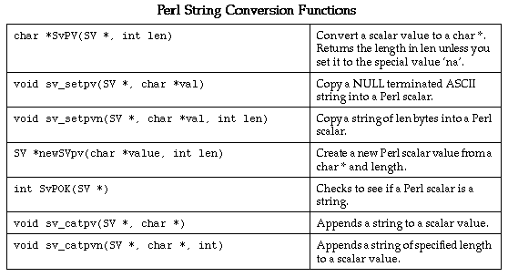

This will produce 3 files. The first file, example_wrap.c contains all of the C code needed to build a Perl5 module. The second file, example.pm contains supporting Perl code needed to properly load the module into Perl. The third file will be a documentation file (the exact filename depends on the documentation style). To finish building a module, you will need to compile the file example_wrap.c and link it with the rest of your program (and possibly Perl itself). There are several methods for doing this.swig -perl5 example.i
#include "Extern.h" #include "perl.h" #include "XSUB.h"
These are usually located in a directory like this
/usr/local/lib/perl5/arch-osname/5.003/CORE
The SWIG configuration script will try to find this directory, but it's not entirely foolproof. You may have to dig around yourself.
% gcc example.c % gcc example_wrap.c -I/usr/local/lib/perl5/arch-osname/5.003/CORE -Dbool=char -c % ld -shared example.o example_wrap.o -o example.so # Irix
The name of the shared object file must match the module name used in the SWIG interface file. If you used `%module example', then the target should be named `example.so', `example.sl', or the appropriate name on your system (check the man pages for the linker).
Unfortunately, the process of building dynamic modules varies on every single machine. Both the C compiler and linker may need special command line options. SWIG tries to guess how to build dynamic modules on your machine in order to run its example programs. Again, the configure script isn't foolproof .
Now, to build a module, simply follow these steps :# File : Makefile.PL use ExtUtils::MakeMaker; WriteMakefile( `NAME' => `example', # Name of package `LIBS' => [`-lm'], # Name of custom libraries `OBJECT' => `example.o example_wrap.o' # Object files );
% perl Makefile.PL % make % make install
This is the preferred approach if you building general purpose Perl5 modules for distribution. More information about MakeMaker can be found in "Programming Perl, 2nd ed." by Larry Wall, Tom Christiansen, and Randal Schwartz.
% swig -perl5 -static example.i
By default SWIG includes code for dynamic loading, but the -static option takes it out.
Next, you will need to supply a main() function that initializes your extension and starts the Perl interpreter. While, this may sound daunting, SWIG can do this for you automatically as follows :
%module example extern double My_variable; extern int fact(int); // Include code for rebuilding Perl %include perlmain.i
The same thing can be accomplished by running SWIG as follows :
The permain.i file inserts Perl's main() function into the wrapper code and automatically initializes the SWIG generated module. If you just want to make a quick a dirty module, this may be the easiest way. By default, the perlmain.i code does not initialize any other Perl extensions. If you need to use other packages, you will need to modify it appropriately. You can do this by just copying perlmain.i out of the SWIG library, placing it in your own directory, and modifying it to suit your purposes.% swig -perl5 -static -lperlmain.i example.i
To build your new Perl executable, follow the exact same procedure as for a dynamic module, but change the link line as follows :
% ld example.o example_wrap.o -L/usr/local/lib/perl5/arch/5.003/CORE \ -lperl -lsocket -lnsl -lm -o myperl
This will produce a new version of Perl called myperl. It should be functionality identical to Perl with your C/C++ extension added to it. Depending on your machine, you may need to link with additional libraries such as -lsocket, -lnsl, -ldl, etc...
Compiling dynamic modules for C++ is also a tricky business. When compiling C++ modules, you may need to link using the C++ compiler such as :
unix > c++ -shared example_wrap.o example.o -o example.so
It may also be necessary to link against the libgcc.a, libg++.a, and libstdc++.a libraries (assuming g++). C++ may also complain about one line in the Perl header file "perl.h" and the invalid use of the "explicit" keyword. To work around this problem, put the option -Dexplicit= in your compiler flags.
If all else fails, put on your wizard cap and start looking around in the header files. Once you've figured out how to get one module to compile, you can compile just about all other modules.
Now, assuming all went well, SWIG will be automatically invoked when you build your project. Any changes made to the interface file will result in SWIG being automatically invoked to produce a new version of the wrapper file. To run your new Perl extension, simply run Perl and use the use command as normal. For example :
It appears that DLL's will work if they are placed in the current working directory. To make a generally DLL available, it should be place (along with its support files) in the Lib\Auto\[module] sub-directory of the Perl directory where [module] is the name of your module.DOS > perl use example; $a = example::fact(4); print "$a\n";
# Makefile for building an ActiveWare Perl for Win32 extension # Note : Extensions must be compiled with the C++ compiler! SRCS = example.cxx IFILE = example INTERFACE = $(IFILE).i WRAPFILE = $(IFILE)_wrap.cxx # Location of the Visual C++ tools (32 bit assumed) TOOLS = c:\msdev TARGET = example.dll CC = $(TOOLS)\bin\cl.exe LINK = $(TOOLS)\bin\link.exe INCLUDE32 = -I$(TOOLS)\include MACHINE = IX86 # C Library needed to build a DLL DLLIBC = msvcrt.lib oldnames.lib # Windows libraries that are apparently needed WINLIB = kernel32.lib advapi32.lib user32.lib gdi32.lib comdlg32.lib winspool.lib # Libraries common to all DLLs LIBS = $(DLLIBC) $(WINLIB) # Linker options LOPT = -debug:full -debugtype:cv /NODEFAULTLIB /RELEASE /NOLOGO / MACHINE:$(MACHINE) -entry:_DllMainCRTStartup@12 -dll # C compiler flags CFLAGS = /Z7 /Od /c /W3 /nologo # Perl 5.004 PERL_INCLUDE = -Id:\perl5\lib\CORE PERLLIB = d:\perl5\lib\CORE\perl.lib PERLFLAGS = /DWIN32 /DMSWIN32 /DWIN32IO_IS_STDIO # ActiveWare PERL_INCLUDE = -Id:\perl -Id:\perl\inc PERL_LIB = d:\perl\Release\perl300.lib PERLFLAGS = /DWIN32 /DMSWIN32 /DPERL_OBJECT perl:: ..\..\swig -perl5 -o $(WRAPFILE) $(INTERFACE) $(CC) $(CFLAGS) $(PERLFLAGS) $(PERL_INCLUDE) $(SRCS) $(WRAPFILE) set LIB=$(TOOLS)\lib $(LINK) $(LOPT) -out:example.dll $(LIBS) $(PERLLIB) example.obj example_wrap.obj
To build the extension, run NMAKE (note that you may be to run vcvars32 before doing this to set the correct environment variables). This is a simplistic Makefile, but hopefully its enough to get you started.
% perl5 use example; # load the example module print example::fact(4),"\n" # Call a function in it 24
Usually, a module consists of a collection of code that is contained within a single file. A package, on the other hand, is the Perl equivalent of a namespace. A package is alot like a module, except that it is independent of files. Any number of files may be part of the same package--or a package may be broken up into a collection of modules if you prefer to think about it in this way.
By default, SWIG installs its functions into a package with the same name as the module. This can be changed by giving SWIG the -package option :
% swig -perl5 -package FooBar example.i
In this case, we still create a module called `example', but all of the functions in that module will be installed into the package `FooBar.' For example :
use example; # Load the module like before print FooBar::fact(4),"\n"; # Call a function in package FooBar
Perl supports object oriented programming using packages. A package can be thought of as a namespace for a class containing methods and data. The reader is well advised to consult "Programming Perl, 2nd Ed." by Wall, Christiansen, and Schwartz for most of the gory details.
Will be used in Perl like this :%module example int foo(int a); double bar (double, double b = 3.0); ...
Okay, this is pretty straightforward...enough said.use example; $a = &example::foo(2); $b = &example::bar(3.5,-1.5); $c = &example::bar(3.5); # Use default argument for 2nd parameter
is accessed as follows :%module example; ... double Spam; ...
SWIG supports global variables of all C datatypes including pointers and complex objects.use example; print $example::Spam,"\n"; $example::Spam = $example::Spam + 4 # ... etc ...
Matrix *new_Matrix(int n, int m);
SWIG will return a value as if you had done this :
$ptr = new_Matrix(int n, int m); # Save pointer return result bless $ptr, "MatrixPtr"; # Bless it as a MatrixPtr
SWIG uses the "blessing" to check the datatype of various pointers. In the event of a mismatch, an error or warning message will be generated.
To check to see if a value is the NULL pointer, use the defined() command :
if (defined($ptr)) {
print "Not a NULL pointer.";
} else {
print "Is a NULL pointer.";
}
The "value" of a Perl reference is not the same as the underlying C pointer that SWIG wrapper functions return. Suppose that $a and $b are two references that point to the same C object. In general, $a and $b will be different--since they are different references. Thus, it is a mistake to check the equality of $a and $b to check the equality of two C pointers. The correct method to check equality of C pointers is to dereference them as follows :
if ($$a == $$b) {
print "a and b point to the same thing in C";
} else {
print "a and b point to different objects.";
}
%module vector
class Vector {
public:
double x,y,z;
Vector();
~Vector();
double magnitude();
};
To use the class, simply use these functions. As it turns out, SWIG has a mechanism for creating shadow classes that hides these functions and uses an object oriented interface instead--keep reading.vector::Vector_x_get($obj); vector::Vector_x_set($obj,$x); vector::Vector_y_get($obj); vector::Vector_y_set($obj,$y); vector::Vector_z_get($obj); vector::Vector_z_set($obj,$z); vector::new_Vector(); vector::delete_Vector($obj); vector::Vector_magnitude($obj);
To represent simple graphs, we can use the following C data structures :
/* File : graph.h */
/* Simple data structures for directed graph of Nodes and Edges */
struct Edge;
typedef struct Node {
int v; /* Vertex number */
struct Edge *adj; /* Adjacency List */
} Node;
typedef struct Edge {
Node *node; /* Connecting Node */
double w; /* Weight (optional) */
struct Edge *next; /* Next edge */
} Edge;
To construct nodes and add edges, we can use the following C code :
/* File : graph.c */
/* Directed graph functions */
#include "graph.h"
static int node_count = 0; /* Number of nodes created */
/* Create a new Node */
Node *new_Node() {
Node *node;
node = (Node *) malloc(sizeof(Node));
node->v = node_count++; /* Bump up the count */
node->adj = (Edge *) 0;
return node;
}
/* Add an "edge" to another node. */
Edge *Node_addedge(Node *mynode, Node *othernode, double w) {
Edge *edge;
edge = (Edge *) malloc(sizeof(Edge));
edge->node = othernode;
edge->w = w;
edge->next = mynode->adj; /* add to my adjacency list */
mynode->adj = edge;
return edge;
}
%module graph
%{
#include "graph.h"
%}
%include graph.h // Get structure definition
%include graph.c // Get support functions
We'll call our module "graph" and simply read in both the files graph.h and graph.c to build an interface.
# Perl code to use our graph code
use graph;
package graph;
# Create some nodes
$n0 = new_Node();
$n1 = new_Node();
$n2 = new_Node();
# Make some edges
Node_addedge($n0,$n1,0); # 0 -> 1
Node_addedge($n0,$n2,0); # 0 -> 2
Node_addedge($n1,$n2,0); # 1 -> 2
Node_addedge($n2,$n0,0); # 2 -> 0
# A procedure to print out a node and its adjacency list
sub print_node {
my $node = shift;
print "Node : ", Node_v_get($node), ", Adj : ";
my $adj = Node_adj_get($node);
while (defined($adj)) { # This checks for a NULL pointer
my $anode = Edge_node_get($adj);
my $v = Node_v_get($anode);
print "$v ";
$adj = Edge_next_get($adj); # Move to next node
}
print "\n";
}
# Print out node information
print_node($n0);
print_node($n1);
print_node($n2);
Node : 0, Adj : 2 1 Node : 1, Adj : 2 Node : 2, Adj : 0
While our two C functions are used in the script, SWIG also created a collection of accessor functions for managing the two C data structures. The functions Node_v_get(), Node_adj_get(), Edge_node_get(), and Edge_next_get() are used to access the corresponding members of our Node and Edge structures. As arguments, these functions simply take a pointer to the corresponding structure.
There are a few other things to notice about the code.
Even though the original C code was rather useless by itself, we have used it to build a simple graph in Perl along with a debugging function for printing out node information. In fact, without making any modifications to the C code, we can use this to build up something more complex such as a database of cities and mileages.
Some cities and mileages
Here's a slightly more complicated Perl script to read in the above mileage table and turn it into a graph:
# Read a file with cities into a graph
use graph;
package graph;
%Cities = (); # Hash table mapping cities to nodes
%Nodes = (); # Mapping of Node indicies to cities
sub read_cities {
my $filename = shift;
open(CITIES,$filename);
while (<CITIES>) {
chop;
my @a = split(/, +/);
my $node1;
my $node2;
# Check to see if a given city is already a node
if (!exists $Cities{$a[0]}) {
$node1 = new_Node();
$Cities{$a[0]} = $node1;
my $node_num = Node_v_get($node1);
$Nodes{$node_num} = $a[0];
} else {
$node1 = $Cities{$a[0]};
}
if (!exists $Cities{$a[1]}) {
$node2 = new_Node();
$Cities{$a[1]} = $node2;
my $node_num = Node_v_get($node2);
$Nodes{$node_num} = $a[1];
} else {
$node2 = $Cities{$a[1]};
}
# Add edges
Node_addedge($node1,$node2,$a[2]);
Node_addedge($node2,$node1,$a[2]);
}
}
sub print_near {
my $city = shift;
if (exists $Cities{$city}) {
my $node = $Cities{$city};
print "Cities near $city : ";
my $adj = Node_adj_get($node);
while (defined($adj)) {
my $anode = Edge_node_get($adj);
my $v = Node_v_get($anode);
print $Nodes{$v},", ";
$adj = Edge_next_get($adj);
}
}
print "\n";
}
read_cities("cities");
print_near("Denver");
print_near("Las Vegas");
In this example, we are using the same functions as before, but we are now introducing two Perl hash tables. The %Cities hash is used to associate city names with a corresponding node in the graph. The %Nodes hash does exactly the opposite---mapping node numbers back to the names of cities. Both of these will come in quite handy for mapping things between the Perl world and the C world later.Cities near Denver : Moab, Kansas City, Santa Fe, Cheyenne, Albuquerque, Cities near Las Vegas : Flagstaff, Los Angeles, Moab, Salt Lake City,
Before proceeding, let's stop and summarize what we have done. Given a couple of very simple C data structures for a graph, we have written a program that can read in a mileage table, construct a weighted graph of the data and print out a list of the cities that are nearby other cities. Yet, the C code knows nothing about the Perl interface or this whole mileage program we've built up around it. While we could have written the entire program in C, we would have had to write a main program, some code to read the input file, and a hash table structure to keep track of the mapping between nodes and cities. Perl, on the other hand, is very good at managing these tasks.
We'll first add the following constants to the file graph.h
/* File : graph.h */ ... #define MAX_NODES 1000 #define UNSEEN -1
Now, a modified version of graph.c :
/* File : graph.c */
/* Directed graph functions */
#include <stdio.h>
#include "graph.h"
int node_count = 0; /* Number of nodes created */
int seen[MAX_NODES]; /* Used by the search function */
...
/* Function to search for node with given vertex number */
static int visit(Node *n,int v) {
Edge *e;
if (seen[n->v] != UNSEEN) return UNSEEN; /* Cycle detected */
if (n->v == v) return 1; /* Match found */
e = n->adj;
while (e) {
seen[n->v] = e->node->v;
if (visit(e->node,v) > 0) return 1;
e = e->next;
}
return 0;
}
/* Depth-first search for a given node */
int Node_search(Node *start, int v) {
int i;
for (i = 0; i < node_count; i++)
seen[i] = UNSEEN;
return visit(start,v);
}
As a general rule, handling arrays is somewhat problematic since the mapping between arrays and pointers may not be what you expect (even in C) and there is not necessarily a natural mapping between arrays in C and arrays in Perl (for example, if we've got a C array with 1 million elements in it, we almost certainly wouldn't want to convert it to a Perl array!).
To access our array, we will write a C helper function that allows us to access invidual elements. However, rather than adding this function to the C code, we can insert it directly into our SWIG interface file. We will also strip the function names out of the .c file and put their prototypes in the header file :
%module graph
%{
#include "graph.h"
%}
%include graph.h
%inline %{
/* Get seen value for a particular node */
int get_seen(int index) {
extern int node_count;
extern int seen[];
if ((index < 0) || (index >= node_count)) return -1;
else return seen[index];
}
%}
This interface file illustrates one of the key points about SWIG--even though SWIG uses C syntax, wrapping arbitrary C code doesn't always result in a good interface. Almost any significant package will require the use of a few "helper" functions to get at certain data structures or to change the way in which a function is called.
With our new C search function, we can now write a Perl function to find a route between two cities. This function simply takes the names of two cities, uses the Cities hash to look up their nodes and calls the C Node_search() function. Afterwards, we walk through the seen[] array using our helper function and print the route.
sub find_route {
my $start = shift;
my $dest = shift;
# Lookup nodes from names
if ((!exists $Cities{$start}) || (!exists $Cities{$dest})) {
return;
}
my $node1 = $Cities{$start};
my $node2 = $Cities{$dest};
print "$start --> $dest :\n";
# Depth first search for a route between cities
my $found = Node_search($node1,Node_v_get($node2));
if ($found) {
$v = Node_v_get($node1);
while ($v != $UNSEEN) {
print " $Nodes{$v}\n";
$v = get_seen($v);
}
} else {
print " You can't get there from here\n";
}
}
read_cities("cities");
find_route("Salt Lake City","Denver");
Of course, depth first search isn't very good at finding an optimal route---obviously this output must be the very scenic route!
Salt Lake City --> Denver :
Salt Lake City
Twin Falls
Boise
Portland
Eugene
San Francisco
Los Angeles
Las Vegas
Flagstaff
Albuquerque
Santa Fe
Durango
Moab
Denver
%visit = ();
sub breadth_search {
my $node1 = shift;
my $node2 = shift;
my @queue;
%visit = ();
# Put starting node into queue
push @queue, $node1;
$visit{Node_v_get($node1)} = Node_v_get($node1);
while (@queue) { # Loop until queue is empty
my $n = shift @queue; # Pop off an node
my $nv = Node_v_get($n);
return 1 if ($$n == $$node2); # Exit if we found the destination
# Put children onto the queue
my $e = Node_adj_get($n);
while (defined($e)) {
my $m = Edge_node_get($e);
my $v = Node_v_get($m);
if (!exists $visit{$v}) {
push @queue, $m;
$visit{$v} = $nv;
}
$e = Edge_next_get($e);
}
}
return 0;
}
sub find_route {
my $start = shift;
my $dest = shift;
# Lookup nodes from names
return if ((!exists $Cities{$start}) || (!exists $Cities{$dest}));
print "$start --> $dest :\n";
my $node1 = $Cities{$start};
my $node2 = $Cities{$dest};
my $found = breadth_search($node1,$node2);
my @path;
if ($found) {
my $v = Node_v_get($node2);
delete $visit{Node_v_get($node1)};
while (exists($visit{$v})) {
unshift @path,$Nodes{$v};
$v = $visit{$v};
}
unshift @path,$start;
foreach $c (@path) { print " $c\n";}
} else {
print " You can't get there from here\n";
}
}
Our Perl implementation creates a queue using an array and manipulating it with shift and push operations. The global hash %visit is used to detect cycles and to determine how we got to each node. When we find a route, we can march backwards through the route to determine the entire path. When we run our new code, we get the following :
find_route("Salt Lake City", "Denver");
Salt Lake City --> Denver :
Salt Lake City
Cheyenne
Denver
With a little magic, SWIG can turn C structs and C++ classes into fully functional Perl classes that work in a more-or-less normal fashion. This transformation is done by writing an additional Perl layer that builds Perl classes on top of the low-level SWIG interface. These Perl classes are said to "shadow" an underlying C/C++ class.
To have SWIG create shadow classes, use the -shadow option :
% swig -perl5 -shadow graph.i
This will produce the same files as before except that the .pm file will now contain significantly more supporting Perl code. While there are some rather subtle aspects of this transformation, for now we'll omit the details and illustrate the changes in an example first (the use of shadow classes has been underlined)
# Read a file with cities into a graph
# Uses shadow classes
use graph;
package graph;
%Cities = (); # Hash table mapping cities to nodes
%Nodes = (); # Mapping of Node indicies to cities
sub read_cities {
my $filename = shift;
open(CITIES,$filename);
while (<CITIES>) {
chop;
my @a = split(/, +/);
my $node1;
my $node2;
# Check to see if a given city is already a node
if (!exists $Cities{$a[0]}) {
$node1 = new_Node();
$Cities{$a[0]} = $node1;
$Nodes{$node1->{v}} = $a[0]; # Note access of `v'
} else {
$node1 = $Cities{$a[0]};
}
if (!exists $Cities{$a[1]}) {
$node2 = new_Node;
$Cities{$a[1]} = $node2;
$Nodes{$node2->{v}} = $a[1];
} else {
$node2 = $Cities{$a[1]};
}
# Add edges
Node_addedge($node1,$node2,$a[2]);
Node_addedge($node2,$node1,$a[2]);
}
}
%visit;
sub breadth_search {
my $node1 = shift;
my $node2 = shift;
my @queue;
%visit = ();
my $dest = $node2->{v};
# Put starting node into queue
push @queue, $node1;
$visit{$node1->{v}} = $node1->{v};
while (@queue) {
my $n = shift @queue;
return 1 if ($n->{v} == $node2->{v});
# Put children onto the queue
my $e = $n->{adj};
while (defined($e)) {
if (!exists $visit{$e->{node}->{v}}) {
push @queue, $e->{node};
$visit{$e->{node}->{v}} = $n->{v};
}
$e = $e->{next};
}
}
return 0;
}
sub find_route {
my $start = shift;
my $dest = shift;
# Lookup nodes from names
return if ((!exists $Cities{$start}) || (!exists $Cities{$dest}));
print "$start --> $dest :\n";
my $node1 = $Cities{$start};
my $node2 = $Cities{$dest};
my $found = breadth_search($node1,$node2);
my @path;
if ($found) {
my $v = $node2->{v};
delete $visit{$node1->{v}};
while (exists($visit{$v})) {
unshift @path,$Nodes{$v};
$v = $visit{$v};
}
unshift @path,$start;
foreach $c (@path) {
print " $c\n";
}
} else {
print " You can't get there from here\n";
}
}
read_cities("cities");
find_route("Salt Lake City","Denver");
For the most part, the code is the same except that we can now access members of complex data structures using -> instead of the low level accessor functions. like before. However, this example is only scratching the surface of what can be done with shadow classes...keep reading.
/* File : location.h */
/* Data structure for holding longitude and lattitude information */
typedef struct Location {
char *name;
double lat_degrees;
double lat_minutes;
double lat_seconds;
char lat_direction;
double long_degrees;
double long_minutes;
double long_seconds;
char long_direction;
} Location;
extern Location *new_Location(char *name);
/* File : location.c */
#include <string.h>
/* Make a new location */
Location *new_Location(char *name) {
Location *l;
l = (Location *) malloc(sizeof(Location));
l->name = (char *) malloc(strlen(name)+1);
strcpy(l->name,name);
return l;
}
Now let's make an interface file for this module :
// File : location.i
%module location
%{
#include "location.h"
%}
%include location.h
Now, finally, we could write a Perl function to read data in the following format :
Geographic data
sub read_locations {
my $filename = shift;
open(LOCATIONS,$filename);
while (<LOCATIONS>) {
chop;
my @a = split(/, +/);
my $loc;
# Check to see if this is a city I know about
if (exists $Cities{$a[0]}) {
# Create a new location
$loc = new_Location($a[0]);
my @coords = split(' ',$a[1]);
# A nice way to assign attributes to an object
%$loc = (lat_degrees => $coords[0],
lat_minutes => $coords[1],
lat_seconds => $coords[2],
lat_direction => $coords[3],
long_degrees => $coords[4],
long_minutes => $coords[5],
long_seconds => $coords[6],
long_direction => $coords[7]);
my $v = $Cities{$a[0]}->{v};
$Locations{$v} = $loc;
}
}
close LOCATIONS;
}
Of course, having locations isn't too useful without a way to look at them so we'll grab the public domain gd library by Thomas Boutell. First, we'll write a simple C function to draw two locations and draw a line between them (some code has been omitted for clarity) :.
/* File : plot.c */
#include <gd.h>
#include <gdfonts.h>
#include "location.h"
double xmin,ymin,xmax,ymax; /* Plotting range */
/* Make a plot of two locations with a line between them */
void plot_cities(gdImagePtr im, Location *city1, Location *city2,
int color) {
...
/* Convert the two locations into screen coordinates (bunch `o math) */
...
/* Draw the cities */
gdImageString(im,gdFontSmall,...)
gdImageString(im,gdFontSmall,...)
gdImageLine(im,ix1,height-iy1,ix2,height-iy2,color);
}
Next, we'll wrap a few critical gd functions into Perl. We don't need the entire library so there's not much sense in wrapping the whole thing (it's easy enough to do if you really want to of course). We'll just wrap a couple of functions to illustrate how it can be used (one might also consider using the already existing gd module for Perl as well).
%module gd
%{
#include "gd.h"
%}
typedef struct gdImageStruct gdImage;
typedef gdImage * gdImagePtr;
/* Functions to manipulate images. */
gdImagePtr gdImageCreate(int sx, int sy);
int gdImageColorAllocate(gdImagePtr im, int r, int g, int b);
%inline %{
/* Shortcut for dumping a file */
void dump_gif(gdImagePtr im, char *filename) {
FILE *f;
f = fopen(filename, "w");
gdImageGif(im,f);
fclose(f);
}
%}
// File : package.i %module graph %include graph.i // The original graph program %include location.i // The location data structure and functions %include gd.i // gd module %include plot.c // Function to plot cities
Whew! After all of that work, we can do the following :
read_cities("cities");
read_locations("locations");
# Create a new image with gd
$im = gdImageCreate(500,500);
$white = gdImageColorAllocate($im,255,255,255);
$black = gdImageColorAllocate($im,0,0,0);
# Set plotting range (variables in the C code)
$xmin = -130;
$xmax = -90;
$ymin = 30;
$ymax = 50;
# Make a plot of the entire graph
@loc = each %Cities;
while (@loc) {
my $city = $loc[0];
my $node = $Cities{$city};
if (exists $Locations{$node->{v}}) {
my $loc1 = $Locations{$node->{v}};
my $e = $node->{adj};
while (defined($e)) {
if (exists $Locations{$e->{node}->{v}}) {
my $loc2 = $Locations{$e->{node}->{v}};
plot_cities($im,$loc1,$loc2,$black);
}
$e = $e->{next};
}
}
@loc = each %Cities;
}
# Dump out a GIF file
dump_gif($im,"test.gif");
When run, we now get the following :
Not too bad for just a little work....
While SWIG can sometimes be used to simply process a raw header file, the results aren't always what you would expect. By working with a separate interface file, you get an opportunity to clean things up. If you're using a stable package, chances are that it's not going to change suddenly so there is really little problem in doing this. To illustrate the process, we will build a Perl5 interface to MATLAB in the next example.
While we could wrap these directly, each function requires an object "Engine". They could be a little annoying to use in Perl since we would have to pass a pointer to the engine with every command. This probably isn't necessary or desired. Thus, we could write some wrappers around these to produce a better interface as follows :int engClose(Engine *ep); int engEvalString(Engine *ep, char *string); Matrix *engGetMatrix(Engine *ep, char *name); int engPutMatrix(Engine *ep, Matrix *mp); Engine *engOpen(char *startcommand); void engOutputBuffer(Engine *ep, char *p, int size);
// engine.i : SWIG file for MATLAB engine
%{
#define BUFFER_SIZE 32768
static Engine *eng = 0;
static char ml_output[BUFFER_SIZE]; /* Result Buffer */
%}
%inline %{
/* Initialize the MATLAB engine */
int init(void) {
if (eng) return -1; /* Already open */
if (!(eng = engOpen("matlab42"))) {
fprintf(stderr,"Unable to open matlab.\n");
return -1;
}
engOutputBuffer(eng,ml_output,BUFFER_SIZE);
return 0;
}
/* Execute a MATLAB command */
char *matlab(char *c) {
if (!eng) return "not initialized!";
engEvalString(eng, c);
return &ml_output[0];
}
/* Get a matrix from MATLAB */
Matrix *GetMatrix(char *name) {
if (!eng) return (Matrix *) 0;
return(engGetMatrix(eng,name));
}
/* Send a matrix to MATLAB */
int PutMatrix(Matrix *m) {
if (!eng) return -1;
return(engPutMatrix(eng,m));
}
%}
//
// mx.i : SWIG file for MATLAB matrix manipulation
%inline %{
/* Get an element from a matrix */
double getr(Matrix *mat, int i, int j) {
double *pr;
int m;
pr = mxGetPr(mat);
m = mxGetM(mat);
return pr[m*j + i];
}
/* Set an element of a matrix */
void setr(Matrix *mat, int i, int j, double val) {
double *pr;
int m;
pr = mxGetPr(mat);
m = mxGetM(mat);
pr[m*j + i] = val;
}
%}
/* Now some MATLAB command */
Matrix *mxCreateFull(int m, int n, int ComplexFlag);
int mxGetM(Matrix *mat);
int mxGetN(Matrix *mat);
char *mxGetName(Matrix *mat);
void mxSetName(Matrix *mat, char *name);
double *mxGetPr(Matrix *mat);
void mxSetPr(Matrix *mat, double *pr);
double mxGetScalar(Matrix *mat);
void mxFreeMatrix(Matrix *pm);
// matlab.i
// Simple SWIG interface to MATLAB
%module matlab
%{
#include "engine.h"
%}
%include engine.i
%include mx.i
Our module can be compiled as follows :
Where $(MATLAB) is the location of the MATLAB installation (you may have to dig for this).unix > swig -perl5 matlab.i unix > gcc -c matlab_wrap.c -I/usr/local/lib/perl5/arch-osname/5.003/CORE -Dbool=char -I$(MATLAB)/extern/include unix > ld -shared matlab_wrap.o -L$(MATLAB)/extern/lib -lmat -o matlab.so
With our new MATLAB module, we can now write Perl scripts that issue MATLAB commands. For example :
use matlab;
matlab::init();
matlab::matlab("x = -8:.25:8; \
y = x; \
[X,Y] = meshgrid(x,y); \
R = sqrt(X.^2 + Y.^2)+eps; \
Z = sin(R)./R; \
mesh(Z); ");
// Simple C function for recording a hit
%module webgraph
%inline %
void hit(double *m, int day, int hour) {
if ((day >= 0) && (day <= 31)) {
*(m+24*(day-1)+hour) += 1.0;
}
}
%}
use matlab;
use webgraph;
# Initialize matlab engine
matlab::init();
# Make a matrix for all hits
$m_all = matlab::mxCreateFull(24,31,0);
matlab::mxSetName($m_all,"all");
$all = matlab::mxGetPr($m_all); # Get double * of Matrix
foreach $file (@ARGV) {
open(FILE,$file);
print "Processing ",$file,"\n";
while (<FILE>) {
@fields = split(/\s+/, $_);
next if ($fields[8] != 200);
@datetime = split(/\[|\/|:/, $fields[3]);
if ($datetime[2] =~ /Apr/) {
webgraph::hit($all, $datetime[1],$datetime[4]);
}
}
# Dump temporary results
} #foreach
matlab::PutMatrix($m_all);
matlab::matlab("figure(1); \
surf(all); \
view(40,40); \
shading interp; \
title('All hits'); \
set(gca,'xlabel',text(0,0,'Day')); \
set(gca,'ylabel',text(0,0,'Hour')); \
print -dgif8 stats_all.gif");
void fadd(double a, double b, double *result) {
*result = a+b;
}
// SWIG interface file with output arguments
%module example
%include typemaps.i // Load the typemaps librayr
%apply double *OUTPUT {double *result}; // Make "result" an output parameter
void fadd(double a, double b, double *result);
When used in a Perl script, the fadd function now takes 2 parameters and returns the result.
When multiple output arguments are involved, a Perl array of values will be returned instead. It is also possible to use Perl references as function values. This is done as shown :$a = fadd(3,4); # $a gets the value of double *result
// SWIG interface file with output arguments
%module
%include typemaps.i
%apply double *REFERENCE {double *result}; // Make "result" a Perl reference
void fadd(double a, double b, double *result);
In addition to handling pointers as output values or references, two other methods are available. The INPUT method indicates that a pointer is an input value and the BOTH method indicates that a pointer is both an input and output value. These would be specified as follows :$c = 0.0; # Variable for holding the result fadd(3,4,\$c); # fadd() places the result in $c
%apply double *INPUT {double *in}; // double *in is an input value
%apply double *BOTH {double *r}; // double *r is both an input/output value
class RangeError {}; // Used for an exception
class DoubleArray {
private:
int n;
double *ptr;
public:
// Create a new array of fixed size
DoubleArray(int size) {
ptr = new double[size];
n = size;
}
// Destroy an array
~DoubleArray() {
delete ptr;
}
// Return the length of the array
int length() {
return n;
}
// Get an item from the array and perform bounds checking.
double getitem(int i) {
if ((i >= 0) && (i < n))
return ptr[i];
else
throw RangeError();
}
// Set an item in the array and perform bounds checking.
void setitem(int i, double val) {
if ((i >= 0) && (i < n))
ptr[i] = val;
else {
throw RangeError();
}
}
};
The functions associated with this class can throw a range exception for an out-of-bounds array access. We can catch this in our Perl extension by specifying the following in an interface file :
%except(perl5) {
try {
$function // Gets substituted by actual function call
}
catch (RangeError) {
croak("Array index out-of-bounds");
}
}
%module example
%typemap(perl5,in) int {
$target = (int) SvIV($source);
printf("Received an integer : %d\n", $target);
}
...
extern int fact(int n);
When this example is used in Perl5, it will operate as follows :
use example; $n = example::fact(6); print "$n\n"; ... Output : Received an integer : 6 720
General discussion of typemaps can be found in the main SWIG users reference.
%typemap(perl5,in) Converts Perl5 object to input function arguments.
%typemap(perl5,out) Converts function return value to a Perl5 value.
%typemap(perl5,varin) Converts a Perl5 object to a global variable.
%typemap(perl5,varout) Converts a global variable to a Perl5 object.
%typemap(perl5,freearg) Cleans up a function argument after a function call
%typemap(perl5,argout) Output argument handling
%typemap(perl5,ret) Clean up return value from a function.
%typemap(memberin) Setting of C++ member data (all languages).
%typemap(memberout) Return of C++ member data (all languages).
%typemap(perl5,check) Check value of input parameter.
$source Source value of a conversion
$target Target of conversion (where result should be stored)
$type C datatype being remapped
$mangle Mangled version of datatype (for blessing objects)
$arg Function argument (when applicable).
%module foo
// This typemap will be applied to all char ** function arguments
%typemap(perl5,in) char ** { ... }
// This typemap is applied only to char ** arguments named `argv'
%typemap(perl5,in) char **argv { ... }
Due to the name matching scheme, typemaps do not follow typedef declarations. For example :
%typemap(perl5,in) double {
... get a double ...
}
double foo(double); // Uses the double typemap above
typedef double Real;
Real bar(Real); // Does not use the typemap above (double != Real)
%typemap(perl5,in) double {
... get a double ...
}
double foo(double); // Uses the double typemap above
typedef double Real;
%apply double { Real }; // Apply the double typemap to Reals.
Real bar(Real); // Uses the double typemap already defined.
Named typemaps are extremely useful for managing special cases. It is also possible to use named typemaps to process output arguments (ie. function arguments that have values returned in them).
%module argv
// This tells SWIG to treat char ** as a special case
%typemap(perl5,in) char ** {
AV *tempav;
I32 len;
int i;
SV **tv;
if (!SvROK($source))
croak("$source is not a reference.");
if (SvTYPE(SvRV($source)) != SVt_PVAV)
croak("$source is not an array.");
tempav = (AV*)SvRV($source);
len = av_len(tempav);
$target = (char **) malloc((len+2)*sizeof(char *));
for (i = 0; i <= len; i++) {
tv = av_fetch(tempav, i, 0);
$target[i] = (char *) SvPV(*tv,na);
}
$target[i] = 0;
};
// This cleans up our char ** array after the function call
%typemap(perl5,freearg) char ** {
free($source);
}
// Creates a new Perl array and places a char ** into it
%typemap(perl5,out) char ** {
AV *myav;
SV **svs;
int i = 0,len = 0;
/* Figure out how many elements we have */
while ($source[len])
len++;
svs = (SV **) malloc(len*sizeof(SV *));
for (i = 0; i < len ; i++) {
svs[i] = sv_newmortal();
sv_setpv((SV*)svs[i],$source[i]);
};
myav = av_make(len,svs);
free(svs);
$target = newRV((SV*)myav);
sv_2mortal($target);
}
// Now a few test functions
%inline %{
int print_args(char **argv) {
int i = 0;
while (argv[i]) {
printf("argv[%d] = %s\n", i,argv[i]);
i++;
}
return i;
}
// Returns a char ** list
char **get_args() {
static char *values[] = { "Dave", "Mike", "Susan", "John", "Michelle", 0};
return &values[0];
}
%}
use argv;
@a = ("Dave", "Mike", "John", "Mary"); # Create an array of strings
argv::print_args(\@a); # Pass it to our C function
$b = argv::get_args(); # Get array of strings from C
print @$b,"\n"; # Print it out
Of course, there are many other possibilities. As an alternative to array references, we could pass in strings separated by some delimeter and perform a splitting operation in C.
%module return
// This tells SWIG to treat an double * argument with name 'OutDouble' as
// an output value.
%typemap(perl5,argout) double *OutDouble {
$target = sv_newmortal();
sv_setnv($target, *$source);
argvi++; /* Increment return count -- important! */
}
// If we don't care what the input value is, we can make the typemap ignore it.
%typemap(perl5,ignore) double *OutDouble(double junk) {
$target = &junk; /* junk is a local variable that has been declared */
}
// Now a function to test it
%{
/* Returns the first two input arguments */
int multout(double a, double b, double *out1, double *out2) {
*out1 = a;
*out2 = b;
return 0;
};
%}
// If we name both parameters OutDouble both will be output
int multout(double a, double b, double *OutDouble, double *OutDouble);
...
When output arguments are encountered, they are simply appended to the stack used to return results. This will show up as an array when used in Perl. For example :
@r = multout(7,13); print "multout(7,13) = @r\n";
#define NAMELEN 32
typedef struct {
char name[NAMELEN];
...
} Person;
%typemap(memberin) char[NAMELEN] {
/* Copy at most NAMELEN characters into $target */
strncpy($target,$source,NAMELEN);
}
It should be noted that the [NAMELEN] array size is attached to the typemap. A datatype involving some other kind of array would be affected. However, we can write a typemap that will work for any array dimension as follows :
%typemap(memberin) char [ANY] {
strncpy($target,$source,$dim0);
}
void add(double a, double b, double *c) {
*c = a + b;
}
# Perl script $a = 3.5; $b = 7.5; $c = 0.0; # Output value add($a,$b,\$c); # Place result in c (Except that it doesn't work)
Unfortunately, this does NOT work. There are many reasons for this, but the main one is that SWIG has no idea what a double * really is. It could be an input value, an output value, or an array of 2 million elements. As a result, SWIG leaves it alone and looks exclusively for a C pointer value (which is not the same as a Perl reference--well, at least note of the type used in the above script).
However, you can use a typemap to get the desired effect. For example :
%typemap(perl5,in) double * (double dvalue) {
SV* tempsv;
if (!SvROK($source)) {
croak("expected a reference\n");
}
tempsv = SvRV($source);
if ((!SvNOK(tempsv)) && (!SvIOK(tempsv))) {
croak("expected a double reference\n");
}
dvalue = SvNV(tempsv);
$target = &dvalue;
}
%typemap(perl5,argout) double * {
SV *tempsv;
tempsv = SvRV($arg);
sv_setnv(tempsv, *$source);
}
Now, if you place this before our add function, we can do this :
You'll get the output value of "11.0" which is exactly what we wanted. While this is pretty cool, it should be stressed that you can easily shoot yourself in the foot with typemaps--of course SWIG is has never been too concerned about legislating morality....$a = 3.5; $b = 7.5; $c = 0.0; add($a,$b,\$c); # Now it works! print "$c\n";


The total number of return values should not exceed the number of input values unless you explicitly extend the argument stack. This can be done using the EXTEND() macro as in :
%typemap(perl5,argout) int *OUTPUT {
if (argvi >= items) {
EXTEND(sp,1); /* Extend the stack by 1 object */
}
$target = sv_newmortal();
sv_setiv($target,(IV) *($source));
argvi++;
}
Shadow classes are new in SWIG 1.1 and still somewhat experimental. The current implementation is a combination of contributions provided by Gary Holt and David Fletcher--many thanks!
Using the low-level interface, SWIG creates Perl wrappers around classes, structs, and functions. This collection of wrappers becomes the Perl module that you will use in your Perl code, not the low-level package (the original package is hidden, but working behind the scenes).
%module vector
struct Vector {
Vector(double x, double y, double z);
~Vector();
double x,y,z;
};
These functions can now be used to create a Perl shadow class that looks like this :Vector *new_Vector(double x, double y, double z); void delete_Vector(Vector *v); double Vector_x_get(Vector *v); double Vector_x_set(Vector *v, double value); double Vector_y_get(Vector *v); double Vector_y_set(Vector *v, double value); double Vector_z_get(Vector *v); double Vector_z_set(Vector *v, double value);
package Vector;
@ISA = qw( vector );
%OWNER = ();
%BLESSEDMEMBERS = ();
sub new () {
my $self = shift;
my @args = @_;
$self = vectorc::new_Vector(@args);
return undef if (!defined($self));
bless $self, "Vector";
$OWNER{$self} = 1;
my %retval;
tie %retval, "Vector", $self;
return bless \%retval,"Vector";
}
sub DESTROY {
my $self = shift;
if (exists $OWNER{$self}) {
delete_Vector($self));
delete $OWNER{$self};
}
sub FETCH {
my ($self,$field) = @_;
my $member_func = "vectorc::Vector_${field}_get";
my $val = &$member_func($self);
if (exists $BLESSEDMEMBERS{$field}) {
return undef if (!defined($val));
my %retval;
tie %retval,$BLESSEDMEMBERS{$field},$val;
return bless \%retval, $BLESSEDMEMBERS{$field};
}
return $val;
}
sub STORE {
my ($self,$field,$newval) = @_;
my $member_func = "vectorc::Vector_${field}_set";
if (exists $BLESSEDMEMBERS{$field}) {
&$member_func($self,tied(%{$newval}));
} else {
&$member_func($self,$newval);
}
}
Each structure or class is mapped into a Perl package of the same name. The C++ constructors and destructors are mapped into constructors and destructors for the package and are always named "new" and "DESTROY". The constructor always returns a tied hash table. This hash table is used to access the member variables of a structure in addition to being able to invoke member functions. The %OWNER and %BLESSEDMEMBERS hash tables are used internally and described shortly.
To use our new shadow class we can simply do the following:
# Perl code using Vector class
$v = new Vector(2,3,4);
$w = Vector->new(-1,-2,-3);
# Assignment of a single member
$v->{x} = 7.5;
# Assignment of all members
%$v = ( x=>3,
y=>9,
z=>-2);
# Reading members
$x = $v->{x};
# Destruction
$v->DESTROY();
Vector *Vector_get(Vector *v, int index) {
return &v[i];
}
Vector *new_Vector(double x, double y, double z) {
Vector *v;
v = new Vector(x,y,z); // Call C++ constructor
return v;
}
To manage these problems, each class contains two methods that access an internal hash table called %OWNER. This hash keeps a list of all of the objects that Perl knows that it has created. This happens in two cases: (1) when the constructor has been called, and (2) when a function implicitly creates a new object (as is done when SWIG needs to return a complex datatype by value). When the destructor is invoked, the Perl shadow class module checks the %OWNER hash to see if Perl created the object. If so, the C/C++ destructor is invoked. If not, we simply destroy the Perl object and leave the underlying C object alone (under the assumption that someone else must have created it).
This scheme works remarkably well in practice but it isn't foolproof. In fact, it will fail if you create a new C object in Perl, pass it on to a C function that remembers the object, and then destroy the corresponding Perl object (this situation turns out to come up frequently when constructing objects like linked lists and trees). When C takes possession of an object, you can change Perl's owership by simply deleting the object from the %OWNER hash. This is done using the DISOWN method.
# Perl code to change ownership of an object $v = new Vector(x,y,z); $v->DISOWN();
To acquire ownership of an object, the ACQUIRE method can be used.
As always, a little care is in order. SWIG does not provide reference counting, garbage collection, or advanced features one might find in sophisticated languages.# Given Perl ownership of a file $u = Vector_get($v); $u->ACQUIRE();
struct Particle {
Vector r;
Vector v;
Vector f;
int type;
}
When fetching members from the structure, %BLESSEDMEMBERS is checked. If the requested field is present, we create a tied-hash table and return it. If not, we just return the corresponding member unmodified.package Particle; ... %BLESSEDMEMBERS = ( r => `Vector', v => `Vector', f => `Vector', );
This implementation allows us to operate on nested structures as follows :
# Perl access of nested structure
$p = new Particle();
$p->{f}->{x} = 0.0;
%${$p->{v}} = ( x=>0, y=>0, z=>0);
Since Vector is an object already wrapped into a shadow class, we need to modify this function to accept arguments that are given in the form of tied hash tables. This is done by creating a Perl function like this :double dot_product(Vector *v1, Vector *v2);
sub dot_product {
my @args = @_;
$args[0] = tied(%{$args[0]}); # Get the real pointer values
$args[1] = tied(%{$args[1]});
my $result = vectorc::dot_product(@args);
return $result;
}
This function replaces the original function, but operates in an identical manner.
// shapes.i
// SWIG interface file for shapes class
%module shapes
%{
#include "shapes.h"
%}
class Shape {
public:
virtual double area() = 0;
virtual double perimeter() = 0;
void set_location(double x, double y);
};
class Circle : public Shape {
public:
Circle(double radius);
~Circle();
double area();
double perimeter();
};
class Square : public Shape {
public:
Square(double size);
~Square();
double area();
double perimeter();
}
The @ISA array determines where to look for methods of a particular class. In this case, both the Circle and Square classes inherit functions from Shape so we'll want to look in the Shape base class for them. All classes also inherit from the top-level module shapes. This is because certain common operations needed to implement shadow classes are implemented only once and reused in the wrapper code for various classes and structures.Package Shape; @ISA = (shapes); ... Package Circle; @ISA = (shapes Shape); ... Package Square; @ISA = (shapes Shape);
Since SWIG shadow classes are implemented in Perl, it is easy to subclass from any SWIG generated class. To do this, simply put the name of a SWIG class in the @ISA array for your new class. However, be forewarned that this is not a trivial problem. In particular, inheritance of data members is extremely tricky (and I'm not even sure if it really works).
sub FIRSTKEY {
my $self = shift;
@ITERATORS{$self} = [`x','y','z', ];
my $first = shift @{$ITERATORS{$self}};
return $first;
}
sub NEXTKEY {
my $self = shift;
$nelem = scalar @{$ITERATORS{$self}};
if ($nelem > 0) {
my $member = shift @{$ITERATORS{$self}};
return $member;
} else {
@ITERATORS{$self} = [`x','y','z', ];
return ();
}
}
While iterators may be of limited use when working with C/C++ code, it turns out they can be used to perform an element by element copy of an object.
However, this is not a deep copy so they probably works better with C than with C++.$v = new Vector(1,2,3); $w = new Vector(0,0,0); %$w = %$v; # Copy contents of v into w